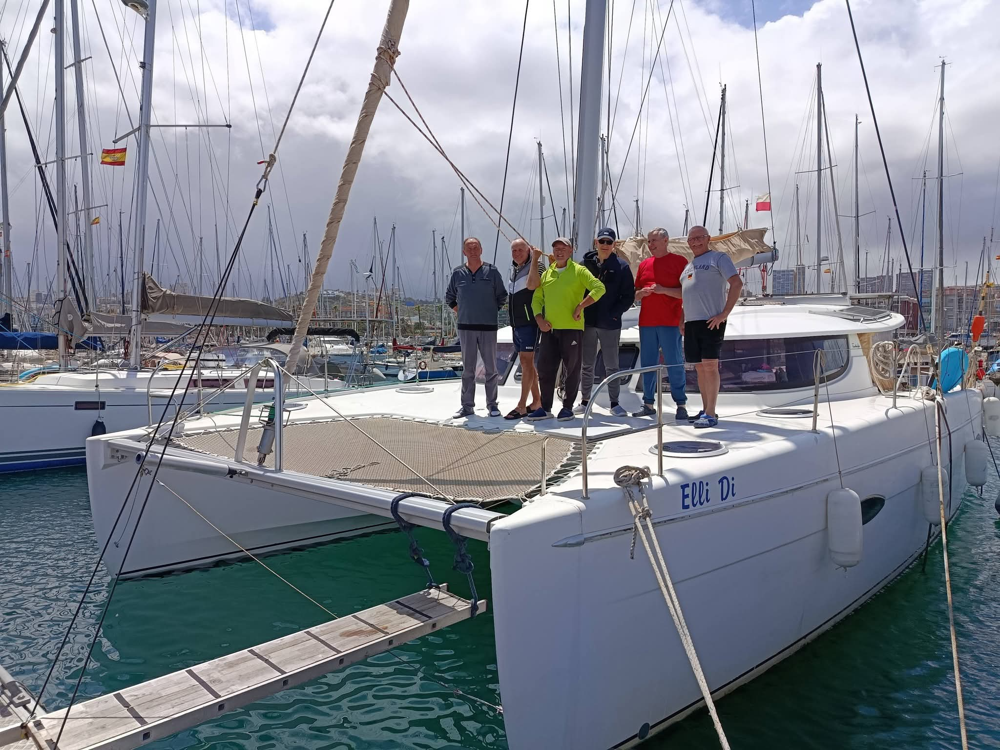
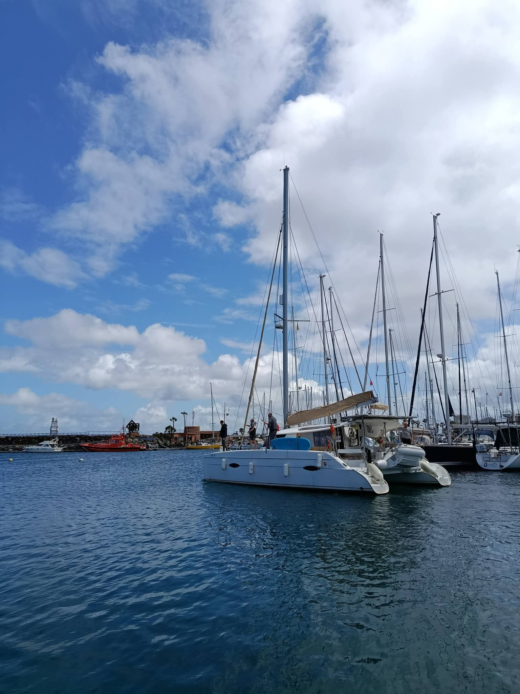
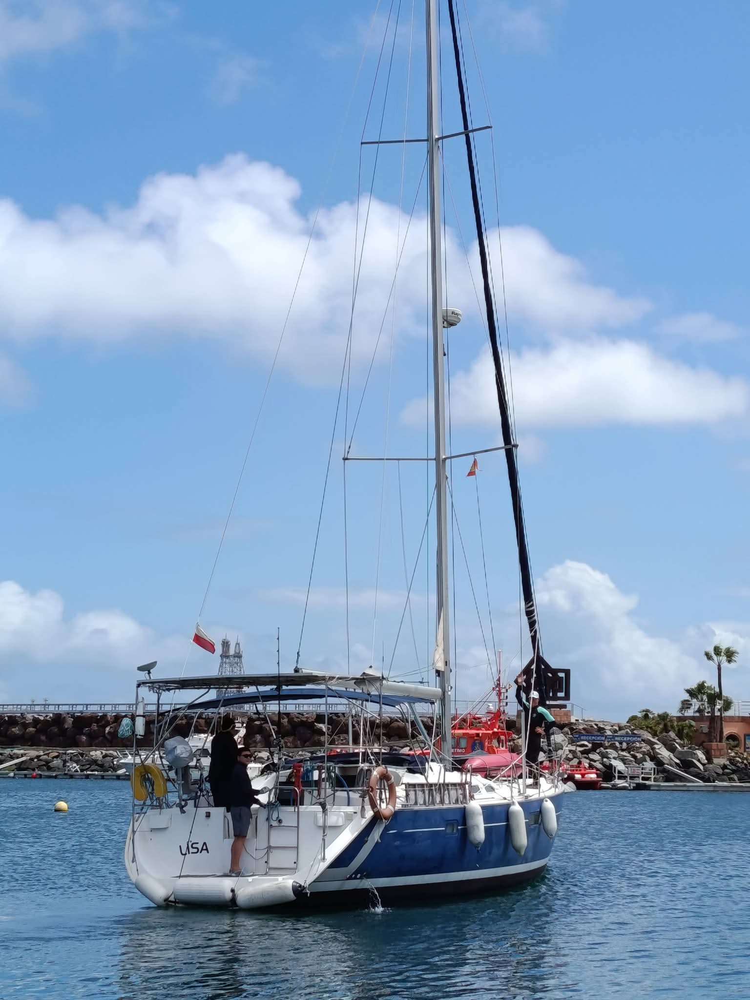
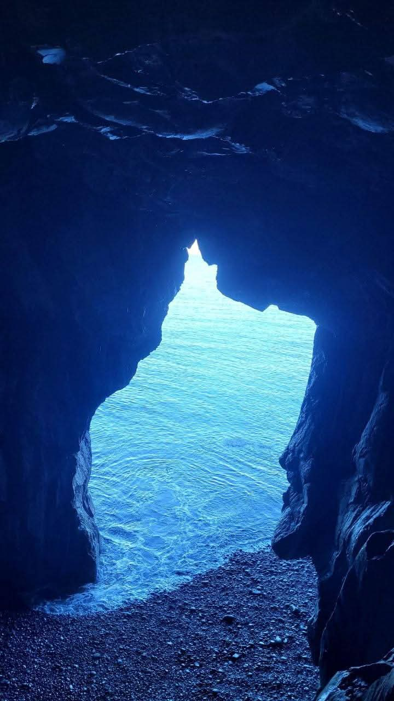
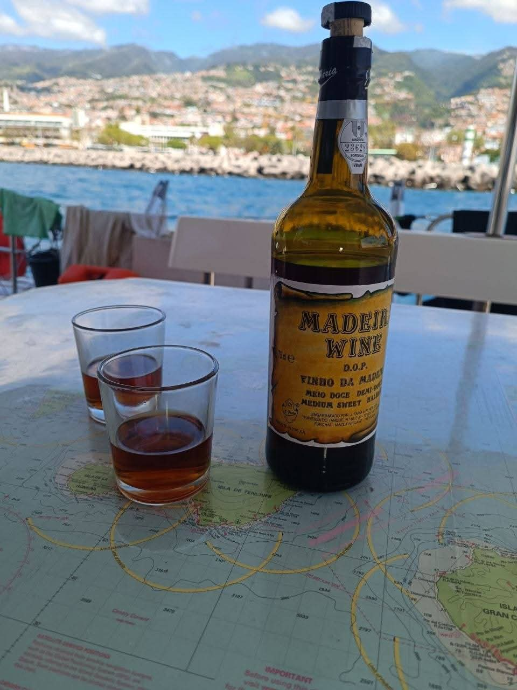
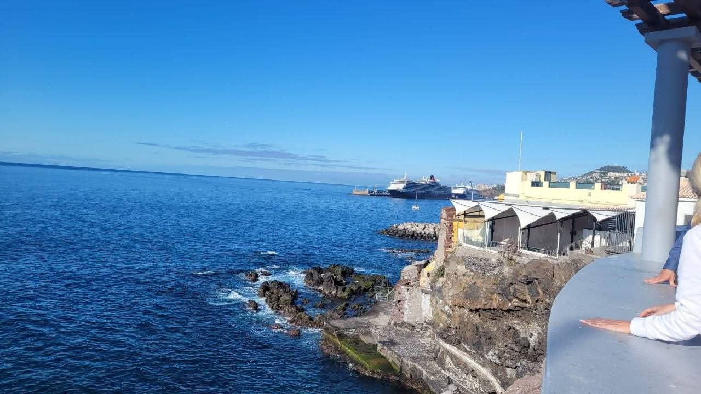
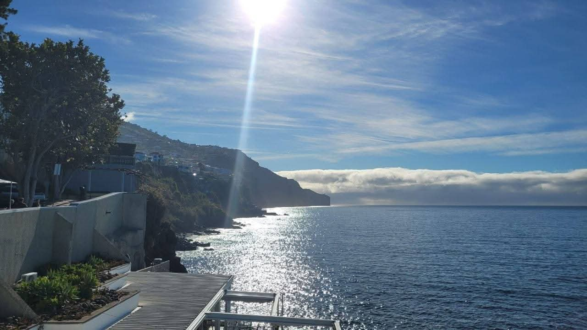
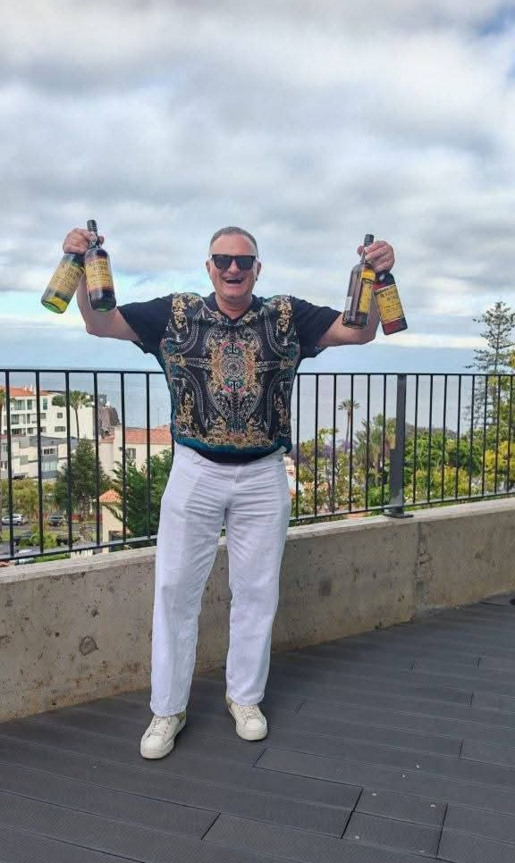
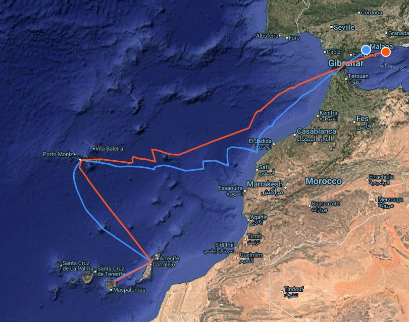
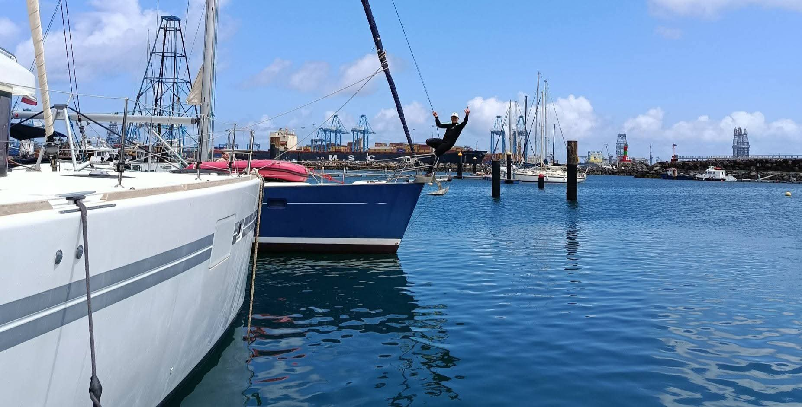

Выход в океан: Гибралтар, Мадейра и мадейра 🍷

Мы вышли в океан!
Для яхты испытание началось сразу на выходе из порта. Соседний понтон ремонтируют, и ремонтники натянули трос, привязавшись к нашему понтону. Яхта при выходе зацепилась килем!
Я стоял на катамаране и не мог помочь. Провожающие на пирсе замерли…
Но профессионализм команды и капитана Юрия Личко позволил решить вопрос без посторонней помощи. Заплыв с препятствиями преодолели за 5 минут! 💪
Для первого дня ветер крепковат — под 30 узлов на порывах. Но мы вышли!
На катамаране тоже были «танцы с бубном» — стояли носом к понтону, и на выходе пришлось выходить дрейфуя между двумя рядами яхт. Но вышли аккуратно.
Идём в сторону Гибралтара, а там посмотрим, куда занесёт стихия. Постараемся заглянуть на Мадейру и в Танжер.
Мадейра встречает мадейрой








Зашли на Мадейру. Давненько я тут не был — и, как оказалось, соскучился 🙂
Вечерний приход в марину получился с приключением: мест для катамарана не оказалось. Встали на якорь совсем рядом — прямо напротив пляжа.
Но всё быстро встало на свои места: ребята с яхты, где капитан Юра, которые пришли раньше, уже успели сбегать в магазин и принесли нам полдюжины бутылок мадейры.
Согласитесь, с таким «приёмом» обиды на марину и игнор в Navily как-то быстро уходят 😄
Стоим на якоре — вид отличный, атмосфера правильная. Всё, как и должно быть.

На Мадейре я был уже много раз, поэтому на экскурсию, которую любезно организовала Светлана, не поехал. Зато делюсь фотографиями от нашей «береговой команды».
С погодой, правда, пришлось побороться — шли через сильный и неприятный ветер. Но дальше будет лучше. Не сегодня — но будет.
После обеда выходим в сторону Гибралтара.
Пару дней — остро к ветру, потом он «скиснет», и у берегов Марокко, скорее всего, пойдём под мотором. Зато там обычно отличная рыбалка — будем ловить 🙂
План простой и красивый: Танжер → Алькаидеса → Гибралтар → и дальше уже Средиземное море.
Есть места на борт!
У нас ещё есть места на два, без преувеличения, лучших участка всего перехода от Канар до Черногории:
Майорка — Рим
Пальма, Сольер, Калобра, Менорка, Сардиния, Корсика, Бонифачо, Порто-Черво… и финал в Риме.
Рим — Мальта
Понца, Капри, Амальфи, Стромболи, Липари, Вулкано, Мессинский пролив, Сиракузы… и Валлетта.
Если вы бывали в этих местах — вы понимаете, о чём я.
Если нет — это как раз тот случай, когда стоит увидеть всё сразу и с моря.
Это не просто маршрут. Это концентрат Средиземки.
Пишите — места ещё есть. Такие переходы запоминаются надолго.
Подробнее о маршруте →